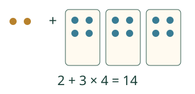
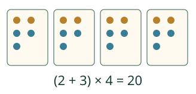

Loikan merkkikori.
6 merkkiä, 4 lisää, 3 pois. Miten lasket?
Korissa on 6 merkkiä, lisätään 4 ja otetaan 3 pois: 6 + 4 − 3 = 7. Kokeilu tarvitsee JavaScriptin; esimerkit ja paperitehtävät toimivat ilman sitä.
Lauseke kuvaa kokonaisen laskun. Korissa on 6 merkkiä. Saat 4 lisää, sitten annat 3 pois. Kirjoitus 6 + 4 − 3 muuttuu riveiksi 10 − 3 ja 7. Kunkin rivin arvo on sama.
Kaksi irrallista ja kolme neljän ryhmää

Ensin selviää ryhmissä olevien määrä: 3 × 4 = 12. Sitten lisätään kaksi irrallista. Et yhdistä ensin lukuja 2 ja 3.
Sulut muuttavat kokonaisuuden

Nyt 2 + 3 on yksi toistuva kokonaisuus. Sulkujen sisältö lasketaan ennen kertomista. Samat luvut ja merkit voivat siis tarkoittaa eri kokonaisuutta.
Järjestys lyhyesti
Laske sulkujen ryhmittelemä osa. Kerto ja jako ovat samalla tasolla, ennen yhteen- ja vähennyslaskuja. Saman tason ketjussa edetään vasemmalta oikealle: 12 − 5 + 2 = 7 + 2 = 9; 18 : 3 × 2 = 6 × 2 = 12. Kertomista ei tehdä aina ennen jakoa, eikä plussaa aina ennen miinusta.
Erillisiä valmiita osia voi laskea toisessa järjestyksessä: lausekkeessa 18 : (4 − 1) + 2 × 5 sekä 4 − 1 että 2 × 5 ovat kokonaisia osia. Kumpikin voi olla ensimmäinen korvattu osa. Älä kuitenkaan yhdistä erillisten osien lukuja keskenään.
Mieti: saako 2 + 3 × 4 kirjoittaa muodossa 5 × 4?
Katso perustelu
Ei: ensimmäisen arvo on 14, jälkimmäisen 20. Rivi vaihtui eri laskuksi. Kirjoita 2 + 3 × 4 = 2 + 12 = 14, älä väärää ketjua 2 + 3 = 5 × 4 = 20.
Uusi tilanne: jokaiselle molemmat tuotteet
Kolme lasta ostaa kukin 4 € lipun ja 2 € ohjelman. Jokainen maksaa 6 €, joten 3 × (4 + 2) = 18 euroa. Myös 3 × 4 + 3 × 2 antaa saman kokonaishinnan. Merkintä 3 × 4 + 2 maksaisi ohjelman vain kerran.
Tutki lisää
Kokeile mallin kolmen osalaskun reittiä. Laske paperilla ensin 2 × 5, sitten sulkujen 4 − 1. Vertaa mallin toiseen reittiin: arvo on sama 16. Perustele, miksi 18 : 4 ei ole tässä kokonainen korvattava osa.
Lopuksi: kumpi tarkoittaa kahta pussia, joissa kummassakin on 3 punaista ja 1 sininen merkki: 2 × (3 + 1) vai 2 × 3 + 1?
Opettajalle ja ilman ruutua
Luokat 3–6. M-ARITH-01 on vaadittu esitieto. Mallin aloitusreitti käyttää vain yhteen- ja vähennyslaskua. Kerto- ja jakovariantit edellyttävät kyseisen laskutoimituksen ymmärtämistä; ne eivät ole yleinen aloitusportti. Lite-version valittu tehtäväjoukko käyttää kerto- ja jakolaskua: näissä tehtävissä tarvitaan käytetyn laskutoimituksen taitoa. Tämän standalone-sivun yhteen- ja vähennyslaskun aloitusreitti ei yksin osoita valmiutta Lite-tehtäviin. Reittien ero ei lisää yhteiseen KC-verkkoon kovaa esitietoporttia. Valitse oppijalle tuttu reitti ja lue teksti tarvittaessa. Ei ääneen vastaamisen tai esineiden nimeämisen pakkoa.
Kokoa merkkiryhmät pöydälle. Anna oppijan osoittaa, mitkä osat toistuvat. Peitä yksi kokonainen osalasku kortilla, johon on kirjoitettu sen arvo. Muut osat ja niiden merkit säilyvät. Kirjoita samanarvoiset rivit allekkain; älä käytä = ajan tai toimintojen jatkomerkkinä.
Oma osalaskutehtävä tarkistaa valitun kokonaisen osan ja sen arvon, ei pelkkää koko lausekkeen vastausta. Kaksi erillistä alkuosaa hyväksytään. Näytetty mallireitti on yksi reitti, ei kaikkien pätevien menetelmien raja. Parseri tukee rajattuja kokonaislukulausekkeita: +, −, ×, jako ja sulut; jakaminen on täsmällistä ei-nollalla. Ei potensseja, kirjaimia, likiarvoja tai yleisen algebran osaamisväitettä.
Mallin askeleet ovat esitysvaiheita, eivät fyysistä aikaa. Apumalli ei täytä harjoitusvastausta. Oikea lyhyt vastaus ei osoita itsenäistä pitkän laskun prosessia, muistamista tai formaalia hallintaa. Ei henkilöhistoriaa, aikarajaa tai mitattua oppimistulosväitettä.